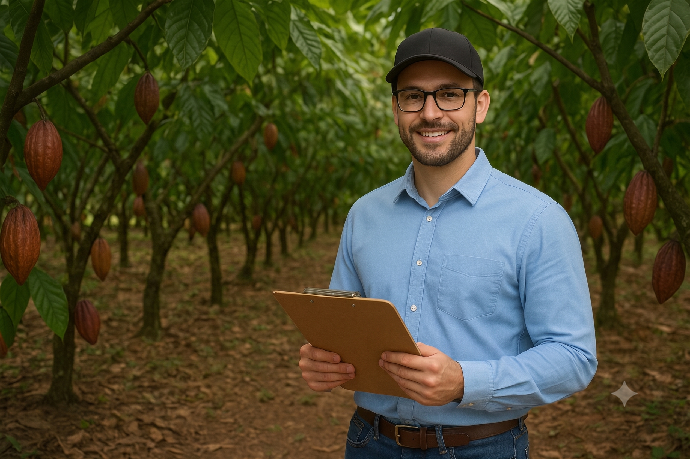

¿Tienes dudas sobre nuestros productos o necesitas asesoría para tu cultivo? Nuestro equipo está listo para brindarte atención personalizada y ayudarte a encontrar la mejor solución para tus necesidades.
Km. 2.5 Vía Valencia,
frente a la entrada Cañalito.
PBX (593) 969542880
Km. 14,5 Vía Samborondón
Almax Plus
PBX (593) 968308676
Comunidad Valladolid
PBX (593) 980842422
Forma parte de un equipo comprometido con la agricultura sostenible y el desarrollo del sector agrícola. Buscamos personas apasionadas, innovadoras y con ganas de crecer profesionalmente junto a nosotros.

APLICA